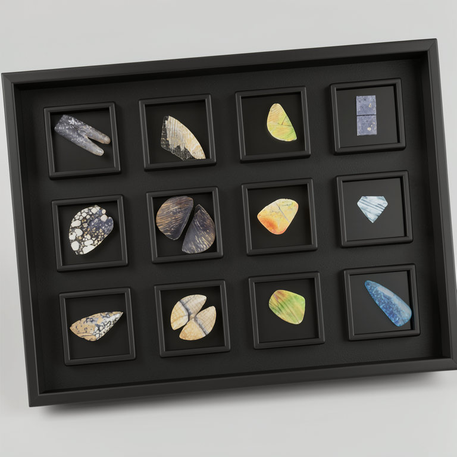
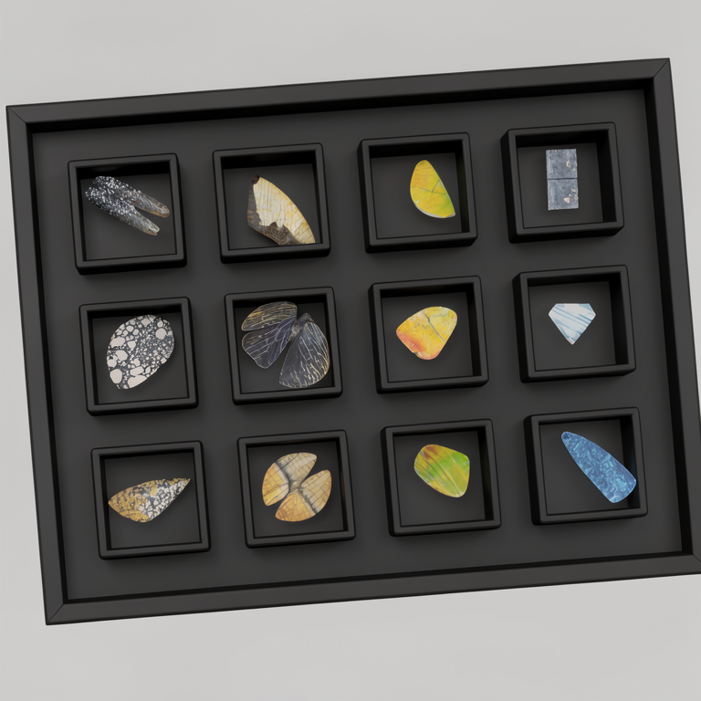
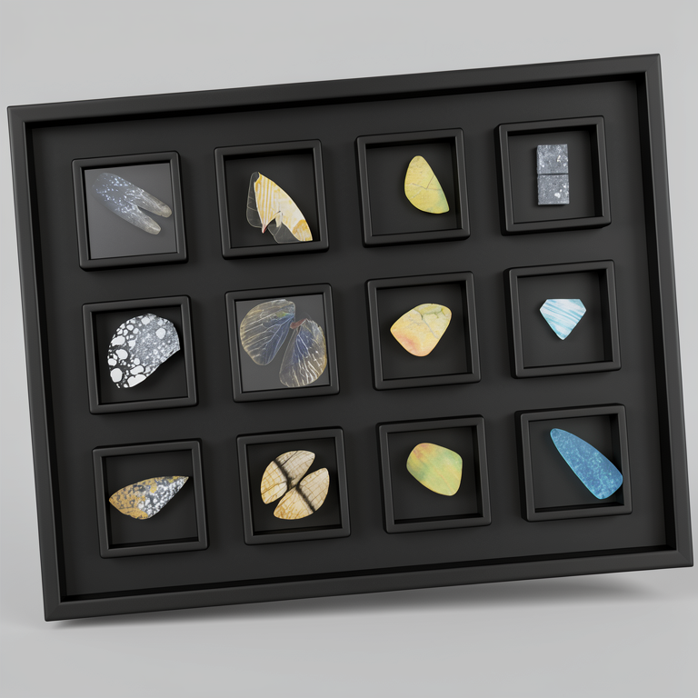
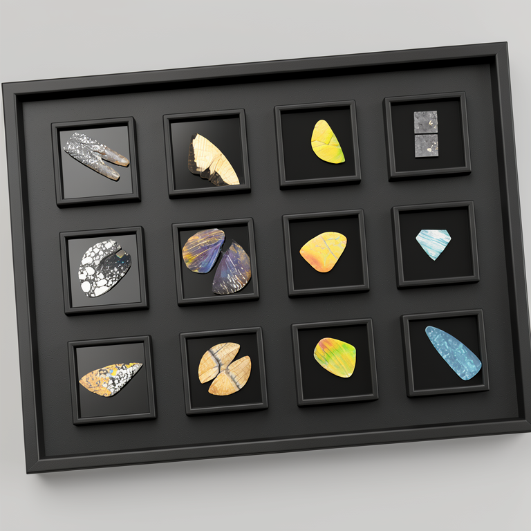

Specimen Tray Flux2 Sourcegen Comparison
Conditioning input: ../inputs/specimen-tray-square-conditioning.png. Prompt: ../prompts/flux2-realistic-specimen-tray-source.txt. Route: Greenroom mflux_flux2_edit_promptfile, model flux2-klein-9b, quantize 4, 768x768, 10 steps, guidance 1.0. Seed 72014 is selected for the first Trellis2MLX mesh firing because it preserves the full tray frame, exact 3 by 4 slot grid, and clean bevel separation with the least confusing reconstruction background.

Seed 72011
Strong source. Exact 3 by 4 grid, good bevels, slightly heavier ground shadow and perspective than preferred.

Seed 72012
Strong source. Clean slot depth and outer frame; a touch flatter and darker across the backing board.

Seed 72013
Strong source. Clean perspective and bevels; near-promoted, but frame/background separation is slightly less tidy than 72014.

Seed 72014 - selected mesh source
Best first mesh source. Exact 3 by 4 grid, full tray frame, crisp raised square rims, readable specimen fragments, and clean reconstruction-friendly background.